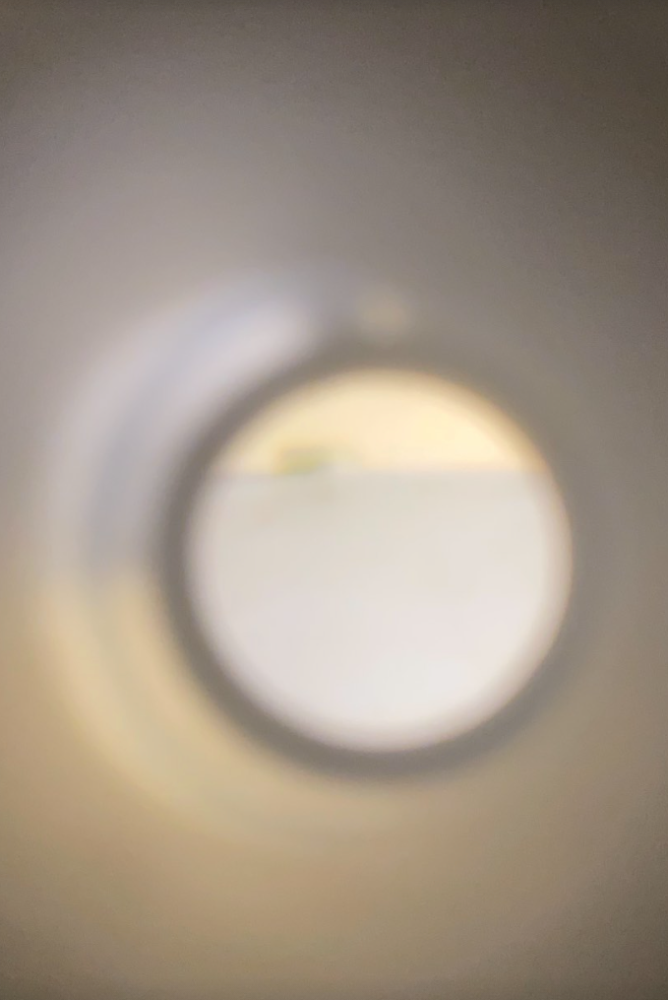

Clem Hepburn
clemhepburn at gmail . com
Attn Eater: Summer's gone, so soup is back in!
thank you, clem
Updates:
08/24/21 - Weird dreams again
08/23/21 - Watched The Outsiders
07/21/21 - Nasturtium morning bloom
07/19/21 - Summer breeze around 3pm
In Memory of Memory Maria Stepanova
An Apprenticeship or The Book of Pleasures Clarice Lispector
Go, Went, Gone Jenny Erpenbeck
The Matrix N.H. Pritchard
Wabi-Sabi (Further Thoughts) Leonard Koren
Outline Rachel Cusk
Choreographing Life: Trisha Brown MASP
Faux Pas. Selected Writings and Drawings Amy Sillman
The Residue Years Mitchell S. Jackson
Delirious New York Rem Koolhaas
There You Are: Interviews, Journals, and Ephemera Joanne Kyger
Links:
special.fish/clem
bird flying below the ground
IFIAAR
Gossip's Web
Reading Group
Volvox Vault
Elliott's Computer
PBS
NASA
NYC Parks
crumple.org
"Bodies run into each other,
and the world runs into beings!
Love happens and the objects become weird!
The political unconscious extracts its pleasures, as does subjectivity expressed in practices!"
— Lauren Berlant, 1957-2021

The political unconscious extracts its pleasures, as does subjectivity expressed in practices!"
— Lauren Berlant, 1957-2021
A grasshopper in my kitchen through binoculars. August 23, 2021.